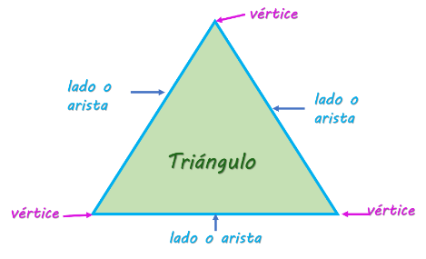
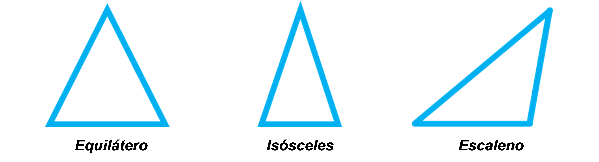
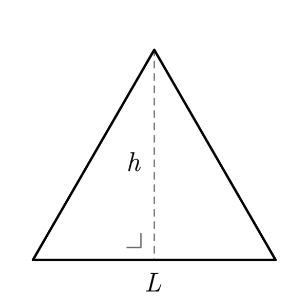
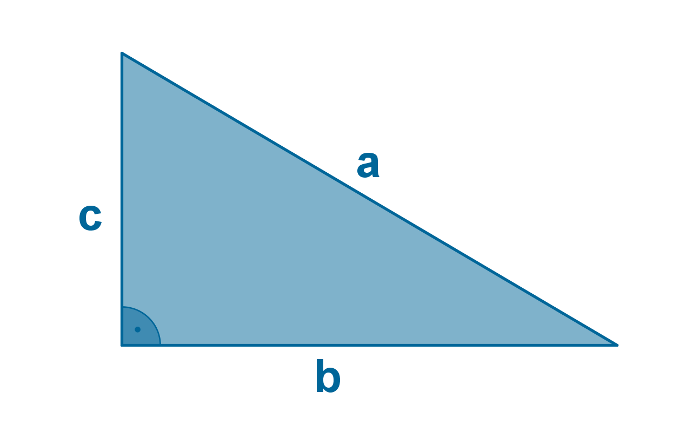
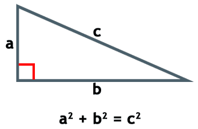

En esta página puedes obtener las medidas de un triángulo solo con ingresar los datos necesarios.
Un triángulo es una figura geométrica de tres lados y tres ángulos.
Los triángulos son una de las formas más simples y fundamentales en geometría.
Un triángulo tiene tres lados, tres vértices y tres ángulos.
Lados: líneas rectas que forman el triángulo
Vértices: puntos donde se encuentran los lados
Angulos: medidas de la apertura entre los lados
Sep. (n.d.). ¿Qué tienen las figuras? https://nuevaescuelamexicana.sep.gob.mx/contenido/coleccion/que-tienen-las-figuras-2/
Los triángulos se pueden clasificar según sus lados y ángulos.
Equiláteros (tres lados iguales)
Isósceles (dos lados iguales)
Escaleno (tres lados diferentes)
Rectángulo (un ángulo recto)
Obtuso (un ángulo obtuso)
Agudo (tres ángulos agudos)

Todo sobre el Triángulo - Mi Profe. (2022, February 24). Mi Profe. https://miprofe.com/triangulo/
Para calcular el área de un triángulo, se utiliza la fórmula: Área = (base * altura) / 2.
No recuerdo de donde saque esta imagen porfa no me demanden
Para calcular el perímetro, se suman las longitudes de los tres lados: Perímetro = lado A + lado B + lado C.
4.2. Área y perímetro de un triángulo rectángulo | Geometría de 1o ESO con GeoGebra 5: Áreas y perímetros de polígonos. (n.d.). https://recursos.edu.xunta.gal/sites/default/files/recurso/1445431624/ud5/42_rea_y_permetro_de_un_tringulo_rectngulo.html
El teorema de Pitágoras se utiliza para encontrar la longitud de un lado de un triángulo rectángulo.
La fórmula es: c² = a² + b², donde c es la hipotenusa y a y b son los catetos.
Posted By: max. (n.d.). ¿Cuál es el teorema de Pitágoras? | Teorema de Pitágoras. https://teoremadepitagoras.info/cual-es-el-teorema-de-pitagoras/
La trigonometría se utiliza para encontrar las longitudes de los lados y los ángulos de un triángulo.
Las funciones trigonométricas (seno, coseno y tangente) son útiles para resolver triángulos.

Colaboradores de los proyectos Wikimedia. (2022, April 29). Trigonometría. Wikilibros. https://es.wikibooks.org/wiki/Trigonometr%C3%ADa
Para usar la calculadora de triángulos, ingresa los valores requeridos en los campos correspondientes.
Haz clic en el botón "Calcular Área" o "Calcular Perímetro" según lo que desees calcular.
El resultado se mostrará en la parte inferior de la página.
por el momento esto es todo lo que nuestra página puede ofrecer pero es posible que sea actualizada en un futuro.
Si tienes alguna sugerencia o comentario, no dudes en contactarnos.
Gracias por visitar nuestra página de calculadora de triángulos.